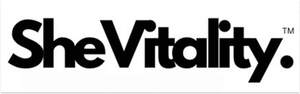

Trade Mark Journal No.2025/043 24 October 2025
UK00004278027 14 October 2025 (3,5)

- Class 3
- Face masks; Face and body masks; Cleaning masks for the face; Make-up for the face; Face scrub; Face wipes; Face paint; Make-up for the face and body; Facial masks; Face powder; Face wash; Face blusher; Face creams; Body mask cream; Face paints; Face glitter; Skin masks; Face powders; Body mask powder; Face wash [cosmetic]; Face and body glitter; Face and body creams; Exfoliating scrubs for the face; Body mask lotion; Face oils; Face packs; Face scrubs (Non-medicated -); Body masks; Face gels; Face powder [for cosmetic use]; Hair masks; Face and body lotions; Facial beauty masks; Make-up preparations for the face and body; Beauty masks for hands; Skin moisturizer masks; Pressed face powder; Face powder (Non-medicated -); Cosmetic facial masks; Facial masks [cosmetic]; Face cream (Non-medicated -); Face packs [cosmetic]; Clay skin masks; Face powders [for cosmetic use]; Cosmetic face powders; Cosmetic paste for application to the face to counteract glare; Hand masks for skin care; Gel eye masks; Toning lotion, for the face, body and hands; Cosmetic white face powder; Loose face powder; Creamy face powder; Lotions for face and body care; Skin masks [cosmetics]; Face creams for cosmetic use; Beauty masks; Masks (Beauty -); Pores tightening mask packs used as cosmetics; Face dusting powders; Cleansing masks; Hydrating masks; Face lifting stickers for cosmetic use; Foot masks for skin care; Liquid soaps for hands and face; Hair care masks; Cosmetic mud masks; Cosmetic masks; Hairstyling masks; Beauty tonics for application to the face; Face powder in the form of powder-coated paper; Disposable wipes impregnated with cleansing compounds for use on the face.
- Class 5
- Nutraceuticals for use as a dietary supplement; Dietary supplement drinks; Vitamin supplement patches; Dietary supplements; Vitamin supplements; Nutritional supplements; Calcium tablets as a food supplement; Dietary supplement drink mixes; Probiotic supplements; Flaxseed dietary supplements; Colostrum supplements; Dietary supplements consisting of vitamins; Nutritional supplement meal replacement bars for boosting energy; Zinc supplement lozenges; Homeopathic supplements; Calcium supplements; Propolis dietary supplements; Dietary supplements for medical use; Prebiotic supplements; Herbal supplements; Chlorella dietary supplements; Powdered nutritional supplement drink mix; Anti-oxidant supplements; Dietary supplements in powder form; Nutritional supplements for veterinary use; Dietary and nutritional supplements; Protein supplement shakes; Lecithin dietary supplements; Zinc dietary supplements; Ground flaxseed fiber for use as a dietary supplement; Nutritional supplement energy bars; Mineral dietary supplements; Nutritional supplements consisting primarily of magnesium; Dietary supplements consisting primarily of magnesium; Liquid dietary supplements; Protein supplements; Food supplements; Protein dietary supplements; Enzyme dietary supplements; Dietary supplements consisting primarily of calcium; Nutritional supplements consisting primarily of calcium; Mineral nutritional supplements; Dietary food supplements; Liquid nutritional supplements; Feed supplements for veterinary use; Yeast dietary supplements; Liquid vitamin supplements; Alginate dietary supplements; Linseed dietary supplements; Vitamin and mineral supplements; Acai powder dietary supplements; Casein dietary supplements; Nutritional supplements consisting primarily of zinc; Powdered nutritional supplement energy drink mix; Anti-oxidant food supplements; Flaxseed oil dietary supplements; Pollen dietary supplements; Food supplements for dietetic use; Glucose dietary supplements; Albumin dietary supplements; Nutritional supplements consisting primarily of iron; Wheat dietary supplements; Dietary supplements consisting primarily of iron; Dietary supplements for pets; Protein powder dietary supplements; Powdered fruit-flavored dietary supplement drink mix; Dietary supplements with a cosmetic effect; Dietary supplements for infants; Vitamin and mineral food supplements; Food supplements for veterinary use; Nutritional supplements for livestock feed; Vitamin supplements for animals; Nutritional supplements consisting of fungal extracts; Dietary food supplements used for modified fasting; Vitamin and mineral supplements for pets; Whey protein dietary supplements; Dietary supplements for animals; Liquid herbal supplements; Dietary supplements for humans; Herbal dietary supplements for persons special dietary requirements; Fodder supplements for veterinary purposes; Soy isoflavone dietary supplements; Dietary supplements and dietetic preparations; Vitamin preparations in the nature of food supplements; Health food supplements made principally of vitamins; Soy protein dietary supplements; Bee pollen for use as a dietary food supplement; Health-aid foods supplement containing red ginseng; Food supplements for medical purposes; Dietary supplements and dietetic preparations containing CBD oil; Brewer's yeast dietary supplements; Food supplements in liquid form; Nutritional supplements made of starch adapted for medical use; Mineral dietary supplements for animals; Energy gels (dietary supplements); Mineral dietary supplements for humans; Linseed oil dietary supplements; Activated charcoal dietary supplements; Dietary supplemental drinks; Food supplements for non-medical purposes; Food supplements for sportsmen; Dietary supplements promoting fitness and endurance; Folic acid dietary supplements; Dietary supplements for pets in the nature of a powdered drink mix; Health-aid foods supplements containing ginseng; Dietary supplements for controlling cholesterol; Medicated food supplements; Mineral supplements for feeding livestock; Dietary supplements for humans not for medical purposes; Health food supplements made principally of minerals; Health food supplements for persons with special dietary requirements; Ganoderma lucidum spore powder dietary supplements; Royal jelly dietary supplements; Protein supplements for animals; Preparations for supplementing the body with essential vitamins and microelements; Dietary pet supplements in the form of pet treats; Natural dietary supplements for treating claustrophobia; Delivery agents in the form of coatings for tablets that facilitate the delivery of nutritional supplements; Fitness and endurance supplements; Pine pollen dietary supplements; Multivitamins; Food supplements consisting of trace elements; Anti-oxidants for dietary use; Wheat germ dietary supplements; Diet capsules; Food supplements consisting of amino acids; Nutritional drink mix for use as a meal replacement; Vitamin supplements for use in renal dialysis; Delivery agents in the form of dissolvable films that facilitate the delivery of nutritional supplements; Flaxseed meal for pharmaceutical purposes; Medicated supplements for animal feedstuffs; Strengthening supplements containing parapharmaceutical preparations for prophylactic purposes and for convalescents; Supplementary fodder mixes; Multi-vitamin preparations; Antibiotic food supplements for animals.
JTMO E-COMMERCE HOLDINGS LIMITED